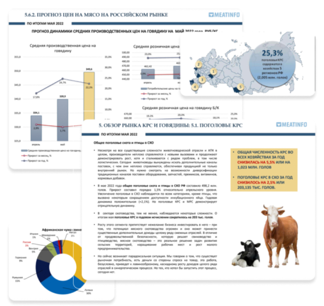
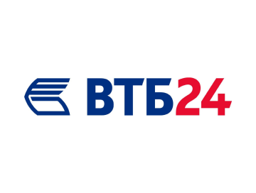
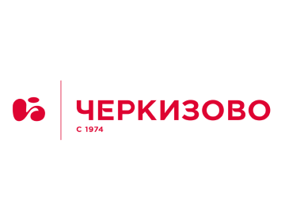
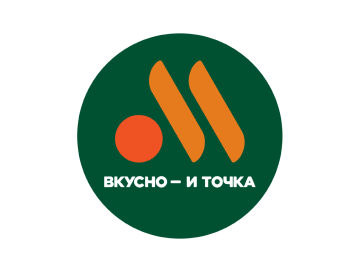
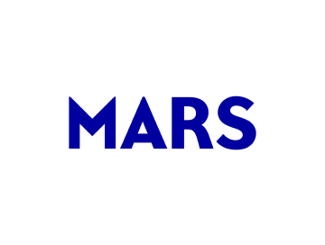

Computer vision AI solutions for manufacturing
Level up your bottom line and cut expences with power of AI automation
78%
точность прогноза
20+
лет накопленной статистики
230+
подписчиков аналитики
Нам доверяют




Форматы отчётов
Отчет формируется по запросу компании в течение 3 рабочих дней
Годовой аналитический отчет: весь рынок мяса
Подробнее
Ежемесячная аналитика мясного рынка
Подробнее
Еженедельная аналитика мясного рынка
Подробнее
Аналитическое исследование рынка КРС
Подробнее
Аналитическое исследование рынка свинины
Подробнее
Аналитическое исследование рынка птицы
Подробнее
Воспользуйтесь бесплатной по выбору оптимального формата отчета для вашего бизнеса.
Конструктор персональной аналитики
Если вам нужен отчет по индивидуальным параметрам, воспользуйтесь конструктором персональной аналитики
Преимущества Аналитики Meatinfo
Уникальная база данных
База данных информационного портала meatinfo.ru, а также анализ других источников по ценам, эпизоотии, импорту, экспорту и др. показателям мясной отрасли.
Использование искусственного интеллекта
Глубокий анализ и высокая точность прогнозирования за счет применения технологий искусственного интеллекта и машинного обучения.
Учет индивидуальных потребностей
Если в отчете отсутствуют нужные данные, его можно изменить, чтобы он соответствовал конкретным требованиям и удовлетворял индивидуальные цели и потребности в информации.
Результаты наших клиентов
Интеграции конкретных показателей аналитики в формулу планирования прибыли компании
Мы запустили каналы в соцсетях
Подписывайтесь и получайте бесплатные аналитические срезы по различным отраслям с/х рынка
Телеграм-канал
Мировые события, тренды и еженедельные отчеты по рынку мяса от meatinfo.ru
Яндекс Музыка
Подкасты о практической стороне применения аналитики meatinfo.ru
Rutube
Кейсы компаний по применению аналитики, обсуждение формул интеграции аналитики в планирование, масштабные события.
Ответы на частые вопросы
Какие источники используются для формирования аналитических отчетов meatinfo ?
· Федеральная служба государственной статистики;
· Единая межведомственная информационно-статистическая система;
· Министерство сельского хозяйства;
· Россельхознадзор;
· ФТС;
· ЕЭС и ТС;
· Аналитический центр ВТО-информ;
· Министерство сельского хозяйства США и других стран;
· ФАО, Евростат;
· Информационный портал Meatinfo.ru
· СМИ;
· Тематические информационные порталы.
· Единая межведомственная информационно-статистическая система;
· Министерство сельского хозяйства;
· Россельхознадзор;
· ФТС;
· ЕЭС и ТС;
· Аналитический центр ВТО-информ;
· Министерство сельского хозяйства США и других стран;
· ФАО, Евростат;
· Информационный портал Meatinfo.ru
· СМИ;
· Тематические информационные порталы.
Как формируются предиктивные цифры аналитических отчетов?
Из источников собираются большие массивы цифр за нужные периоды рынка. Затем цифры загружаются и анализируются с помощью AI. Учитывается, как реагирует рынок на сезонность, как реагирует на мировые события и т.д.
Затем отчеты перепроверяются аналитическим отделом и собираются в готовый продукт с прогнозами и закономерностями рынка.
Какова точность прогнозируемых показателей?
Точность зависит от конкретных показателей и варьируется от 78 до 96 %. Если вы возьмете прогнозы за 2021-2022 год, то увидите, что совпадение отчетов именно в таком диапазоне.
Для чего аналитические отчеты meatinfo приобретают инвестиционные и банковские системы?
Банки, принимая решение о кредитации аграрной компании, выясняют прогноз по рынку и сверяют его с бизнес-планом этого предприятия. Тем самым минимизируют собственные риски. Благодаря аналитическим прогнозам, предсказывается вероятность выплат по кредитным обязательствам в конкретном случае.
Инвесторы так же анализируют рентабельность предприятий, сверяя с независимым мнением аналитики. Это позволяет получать максимальную выгоду от инвестиций.
Инвесторы так же анализируют рентабельность предприятий, сверяя с независимым мнением аналитики. Это позволяет получать максимальную выгоду от инвестиций.
Кто чаще всего приобретает аналитику у meatinfo?
· Фермерские хозяйства
· Перерабатывающие предприятия
· Дистрибьюторские организации
· Банки
· Аналитические организации
· Сети Foodretail
· Сегмент HoReCa
· Перерабатывающие предприятия
· Дистрибьюторские организации
· Банки
· Аналитические организации
· Сети Foodretail
· Сегмент HoReCa